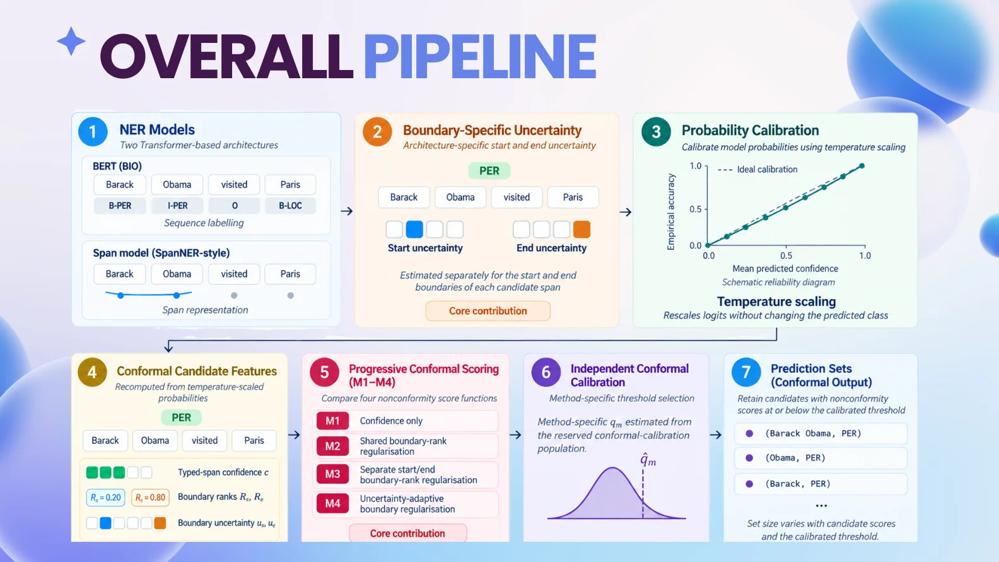
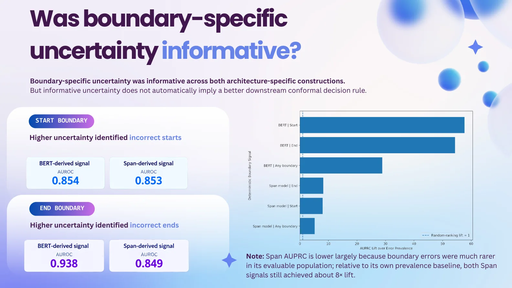
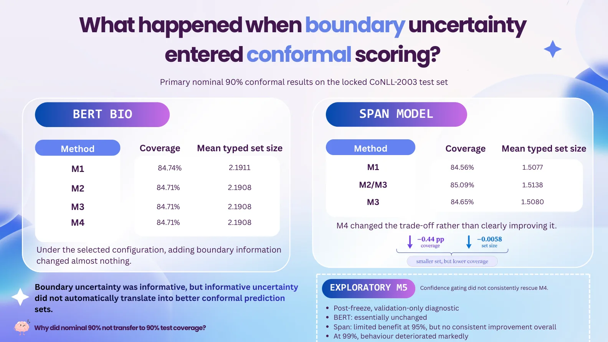
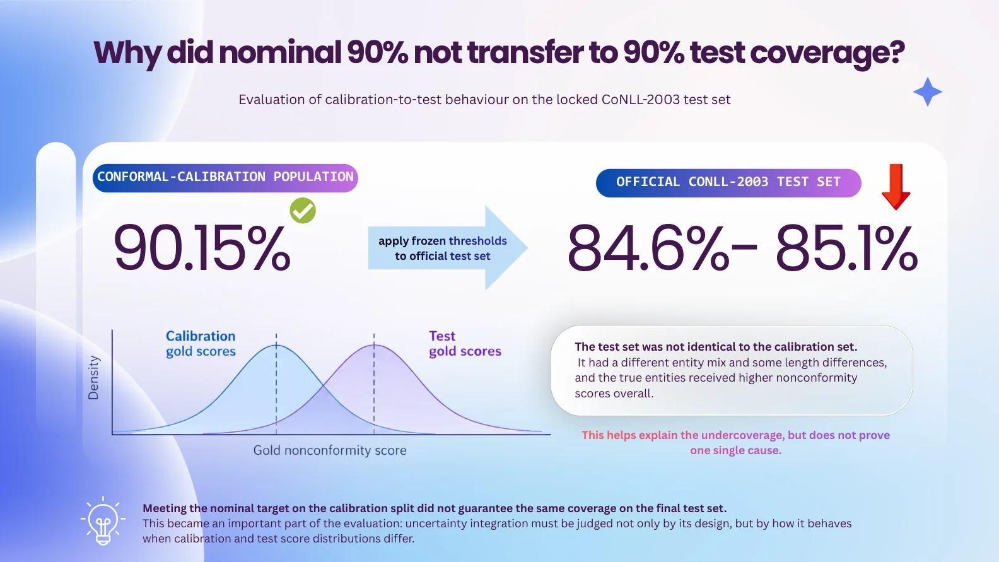
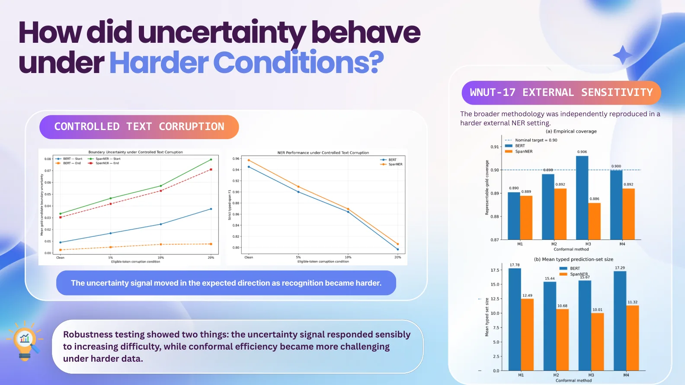
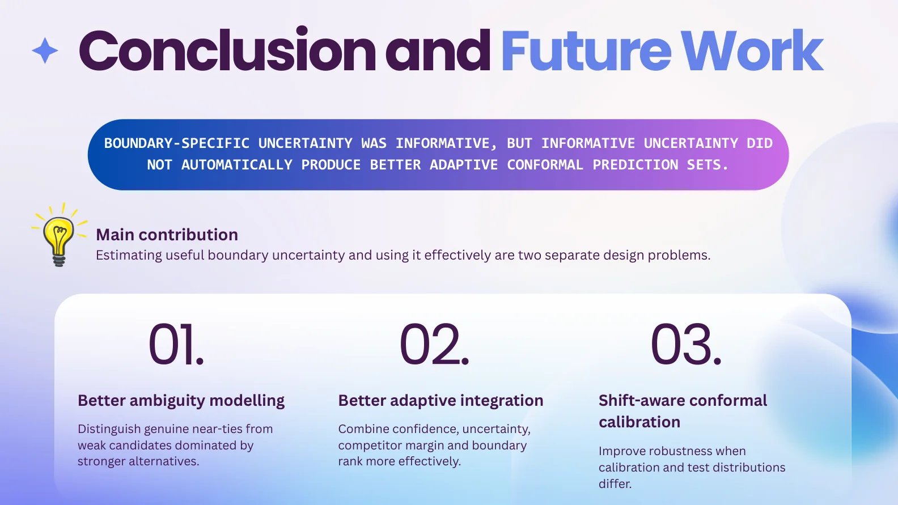

MSC DISSERTATION / RESEARCH
Transformer-Based NER & Boundary Uncertainty
Exploring how transformer-based entity recognition models behave under clean, corrupted and external text, and how reliable their predicted entity boundaries are.
A selected project case study. Figures are descriptive project findings unless explicitly stated otherwise.

The research problem
Named entity recognition identifies spans such as people, organisations and locations within text. Recognising an entity also means deciding precisely where it starts and ends.
What happens to those boundaries when text is noisy or the evaluation domain changes? And how much confidence should we put in them?
Experimental design
- Compared BERT token-based NER and a span-based NER formulation.
- Used CoNLL-2003 and external evaluation on WNUT-17.
- Examined entity-level performance and robustness under character corruption and domain shift.
- Applied probability calibration and conformal prediction to understand uncertainty in entity boundaries.
What I found
Both BERT BIO and the span-based model showed useful signals for identifying uncertain entity boundaries. Temperature scaling improved probability calibration, but adding boundary uncertainty to conformal scoring did not consistently improve the coverage-versus-set-size trade-off. Under the nominal 90% setting, locked test coverage was about 84.6% to 85.1%, illustrating the gap between calibration and test behaviour.
A calibrated model can still under-cover under distribution shift. Reliable evaluation needs both entity-recognition quality and uncertainty-set behaviour.
Status and limitations
This MSc Data Science dissertation was submitted to the University of Nottingham in September 2026. It is presented as student research, not a peer-reviewed publication. Results are specific to the tested datasets and experimental configurations; conformal calibration on one split did not guarantee equivalent coverage on the official test set.
Project visuals
Selected outputs from the work, with the source materials and code linked below.
Each figure below includes the question it helps answer, what you are looking at and the conclusion or limitation worth noticing. Open the image at full size if you want to inspect individual labels.
The research pipeline
Follow the logic
The pipeline moves from two transformer NER architectures through boundary-specific uncertainty estimation, probability calibration, conformal scoring and robustness tests.
The takeaway: A model can identify an entity type correctly and still make an incorrect start or end boundary prediction.

Are boundary signals informative?
Understand the boundary tests
This slide compares how well start and end uncertainty signal incorrect boundaries for BERT BIO and span-based NER.
The takeaway: Higher uncertainty was associated with boundary errors, but finding a useful signal does not automatically improve conformal prediction sets.

Conformal results
Compare methods, not just accuracy
The methods build from confidence-only scoring through boundary-rank and uncertainty-based variants, then compare test coverage and predicted set size.
The takeaway: Integrating boundary information did not consistently produce a better coverage-efficiency trade-off in the locked evaluation.

Calibration-to-test transfer
Why nominal coverage can fall
A 90% target was met on the calibration population, but the frozen thresholds produced about 84.6% to 85.1% coverage on the official test set.
The takeaway: This slide illustrates an important limitation: calibration and test score distributions differed, so nominal coverage was not preserved.

Robustness
What happens when text becomes harder
Controlled character corruption and the external WNUT-17 evaluation test whether the signals remain useful beyond the clean CoNLL-2003 setup.
The takeaway: Uncertainty tended to increase as recognition became harder, while set-efficiency and cross-dataset transfer were more challenging.

Research conclusion
What I took away
The final slide distinguishes finding meaningful start/end uncertainty from designing scoring rules that can successfully use it.
The takeaway: Better uncertainty signals need careful adaptive integration and shift-aware calibration, rather than assuming more features always help.
Selected figures from my MSc dissertation presentation. They report research findings, not peer-reviewed publication claims.